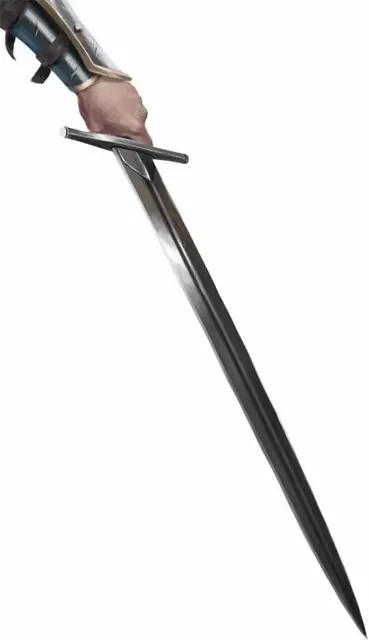

Сталь
Steel
Оружие (длинный меч), очень редкое (требуется настройка существом с добрым мировоззрением)

Рекомендованная стоимость 5 001-50 000 зм
Вы получаете бонус +2 к броскам атаки и урона этим магическим оружием.
Возрождение. Действием вы можете наложить заклинание возрождение [revivify] с помощью меча. Вы должны коснуться цели мечом, чтобы наложить заклинание. Как только это свойство оружия будет использовано, его нельзя будет использовать снова до следующего рассвета.
Разум. Сталь-это разумный, законный добрый длинный меч с Интеллектом 8, Мудростью 11 и Харизмой 15. Он обладает нормальным слухом и зрением на расстоянии до 60 футов. Меч может говорить, читать и понимать Общий и Драконий. Он беспокоится о вашем благополучии, пока вы настроены на него, и ему не нравится избегать сражений.